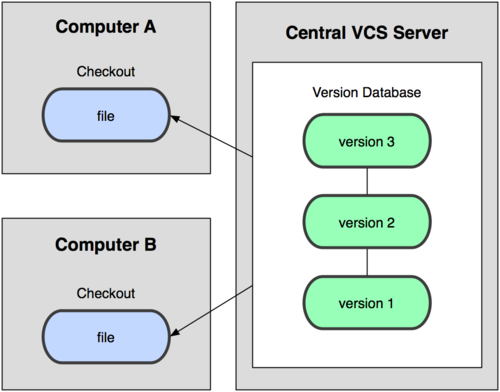

Sistemas de control de versiones¶
Definición, clasificación y funcionamiento¶
Se llama control de versiones a la gestión de los diversos cambios que se realizan sobre los elementos de algún producto o una configuración del mismo. Una versión, revisión o edición de un producto, es el estado en el que se encuentra dicho producto en un momento dado de su desarrollo o modificación. Aunque un sistema de control de versiones puede realizarse de forma manual, es muy aconsejable disponer de herramientas que faciliten esta gestión dando lugar a los llamados sistemas de control de versiones o SVC (del inglés System Version Control).
Estos sistemas facilitan la administración de las distintas versiones de cada producto desarrollado, así como las posibles especializaciones realizadas (por ejemplo, para algún cliente específico). Ejemplos de este tipo de herramientas son entre otros: CVS, Subversion, SourceSafe, ClearCase, Darcs, Bazaar , Plastic SCM, Git, Mercurial, Perforce.
Terminología¶
- Repositorio ("repository")
- El repositorio es el lugar en el que se almacenan los datos actualizados e históricos de cambios.
- Revisión ("revision")
- Una revisión es una versión determinada de la información que se gestiona. Hay sistemas que identifican las revisiones con un contador (Ej. subversion). Hay otros sistemas que identifican las revisiones mediante un código de detección de modificaciones (Ej. git usa SHA1).
- Etiqueta ("tag")
- Los tags permiten identificar de forma fácil revisiones importantes en el proyecto. Por ejemplo se suelen usar tags para identificar el contenido de las versiones publicadas del proyecto.
- Rama ("branch")
- Un conjunto de archivos puede ser ramificado o bifurcado en un punto en el tiempo de manera que, a partir de ese momento, dos copias de esos archivos se pueden desarrollar a velocidades diferentes o en formas diferentes de forma independiente el uno del otro.
- Cambio ("change")
- Un cambio (o diff, o delta) representa una modificación específica de un documento bajo el control de versiones. La granularidad de la modificación que es considerada como un cambio varía entre los sistemas de control de versiones.
- Desplegar ("checkout")
- Es crear una copia de trabajo local desde el repositorio. Un usuario puede especificar una revisión en concreto u obtener la última. El término 'checkout' también se puede utilizar como un sustantivo para describir la copia de trabajo.
- Confirmar ("commit")
- Confirmar es escribir o mezclar los cambios realizados en la copia de trabajo del repositorio. Los términos 'commit' y 'checkin' también se pueden utilizar como sustantivos para describir la nueva revisión que se crea como resultado de confirmar.
- Conflicto ("conflict")
- Un conflicto se produce cuando diferentes partes realizan cambios en el mismo documento, y el sistema es incapaz de conciliar los cambios. Un usuario debe resolver el conflicto mediante la integración de los cambios, o mediante la selección de un cambio en favor del otro.
- Cabeza ("head")
- También a veces se llama tip (punta) y se refiere a la última confirmación, ya sea en el tronco ('trunk') o en una rama ('branch'). El tronco y cada rama tienen su propia cabeza, aunque HEAD se utiliza a veces libremente para referirse al tronco.
- Tronco ("trunk")
- La única línea de desarrollo que no es una rama (a veces también llamada línea base, línea principal o máster).
- Fusionar, integrar, mezclar ("merge")
- Una fusión o integración es una operación en la que se aplican dos tipos de cambios en un archivo o conjunto de archivos. Algunos escenarios de ejemplo son los siguientes:
- Un usuario, trabajando en un conjunto de archivos, actualiza o sincroniza su copia de trabajo con los cambios realizados y confirmados, por otros usuarios, en el repositorio.
- Un usuario intenta confirmar archivos que han sido actualizado por otros usuarios desde el último despliegue ('checkout'), y el software de control de versiones integra automáticamente los archivos (por lo general, después de preguntarle al usuario si se debe proceder con la integración automática, y en algunos casos sólo se hace si la fusión puede ser clara y razonablemente resuelta).
- Un conjunto de archivos se bifurca, un problema que existía antes de la ramificación se trabaja en una nueva rama, y la solución se combina luego en la otra rama.
- Se crea una rama, el código de los archivos es independiente editado, y la rama actualizada se incorpora más tarde en un único tronco unificado.
Clasificación¶
Podemos clasificar los sistemas de control de versiones atendiendo a la arquitectura utilizada para el almacenamiento del código: locales, centralizados y distribuidos.
Locales¶
- Los cambios son guardados localmente y no se comparten con nadie. Esta arquitectura es la antecesora de las dos siguientes.

Centralizados¶
Existe un repositorio centralizado de todo el código, del cual es responsable un único usuario (o conjunto de ellos). Se facilitan las tareas administrativas a cambio de reducir flexibilidad, pues todas las decisiones fuertes (como crear una nueva rama) necesitan la aprobación del responsable. Algunos ejemplos son CVS y Subversion.

Distribuidos¶
Cada usuario tiene su propio repositorio. Los distintos repositorios pueden intercambiar y mezclar revisiones entre ellos. Es frecuente el uso de un repositorio, que está normalmente disponible, que sirve de punto de sincronización de los distintos repositorios locales. Ejemplos: Git y Mercurial.

Ventajas de sistemas distribuidos¶
- No es necesario estar conectado para guardar cambios.
- Posibilidad de continuar trabajando si el repositorio remoto no está accesible.
- El repositorio central está más libre de ramas de pruebas.
- Se necesitan menos recursos para el repositorio remoto.
- Más flexibles al permitir gestionar cada repositorio personal como se quiera.